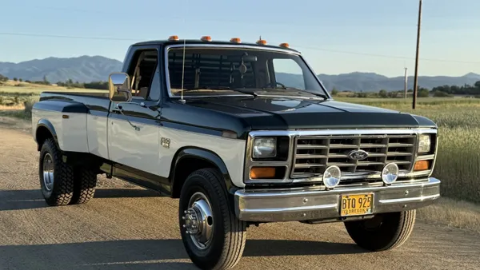

Ford Trucks
Ford trucks have been popular for generations because they combine useful design, strong towing ability, and a style that ranges from classic work-truck simplicity to modern comfort. This page highlights what makes Ford trucks interesting to me.
Why I Like Ford Trucks

What stands out to me about Ford trucks is their mix of practicality and character. Whether it is an older square-body work truck, a clean F-150, or a heavy-duty Super Duty, they have a strong identity and a reputation for usefulness.
I especially like trucks that feel built for real work while still being comfortable enough to drive every day.
Top Ford Truck Priorities
-
Capability
- Good towing and hauling ability
- Strong frame and dependable drivetrain
- Useful bed and cargo options
-
Comfort
- Roomy cab space
- Easy highway driving
- Simple controls and visibility
-
Style
- Classic truck appearance
- Clean interior layout
- A look that feels rugged without being overdone
Favorite Ford Truck Categories
Classic Trucks
Older Ford pickups have a straightforward work-truck feel that makes them memorable. They are simple, tough-looking, and easy to appreciate.
Modern F-150s
Modern F-150s balance everyday comfort with truck utility. They are practical for regular driving while still having real capability.
Super Duty Models
Ford Super Duty trucks stand out for heavier-duty work. They look substantial and are built for more demanding towing and hauling needs.
Ford Truck Video
This embedded YouTube video adds media content to the page and fits the truck theme.
Interactive Tableau Graph
This embedded Tableau visualization satisfies the requirement for a live, interactive graph.